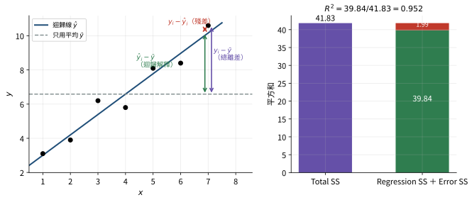
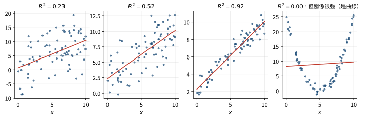
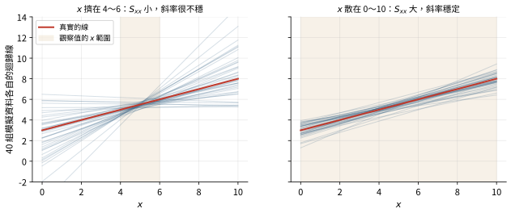
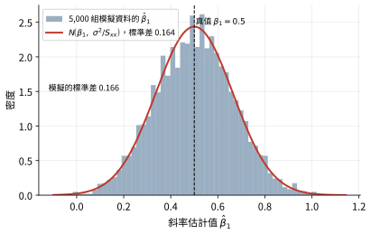
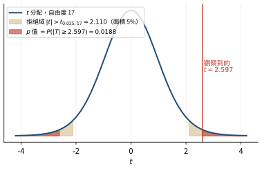
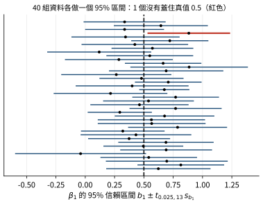
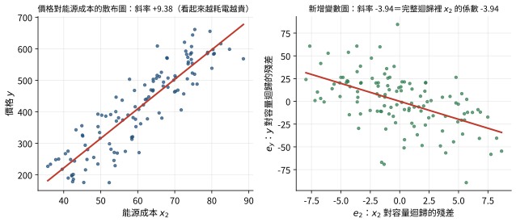

3.1 平方和的分解與殘差標準誤 一、基準模型：只有截距
只有截距的模型 \(y_i=\beta_0+\varepsilon_i\)，最小平方估計是 \(\hat\beta_0=\bar y\)（對 \(\sum(y_i-b_0)^2\) 微分，\(-2\sum(y_i-b_0)=0\)）。這是「什麼解釋變數都不用、每個人都猜平均」的模型。加入解釋變數之後誤差減少多少，就是衡量迴歸好壞的出發點。
二、三個平方和
把每一筆觀察值和平均的差距拆成兩段：
\[\underbrace{y_i-\bar y}_{\text{總離差}}=\underbrace{(y_i-\hat y_i)}_{\text{殘差：沒解釋的部分}}+\underbrace{(\hat y_i-\bar y)}_{\text{迴歸解釋的部分}} .\]
兩邊平方後加總，交叉項剛好是 0（推導在下面），得到
\[\underbrace{\sum_{i=1}^n(y_i-\bar y)^2}_{\text{Total SS}}=\underbrace{\sum_{i=1}^n(y_i-\hat y_i)^2}_{\text{Error SS}}+\underbrace{\sum_{i=1}^n(\hat y_i-\bar y)^2}_{\text{Regression SS}} .\]
推導：交叉項 \(2\sum(y_i-\hat y_i)(\hat y_i-\bar y)=0\)
交叉項是 \(2\sum_ie_i(\hat y_i-\bar y)=2\sum_ie_i\hat y_i-2\bar y\sum_ie_i\)。
由第 2 章的正規方程式：最小平方估計讓 \(\sum_i(y_i-\sum_jb_jx_{ij})^2\) 對每個 \(b_j\) 的偏導數為 0，即
\[\frac{\partial}{\partial b_j}=-2\sum_ix_{ij}\Big(y_i-\sum_lb_lx_{il}\Big)=-2\sum_ix_{ij}e_i=0,\qquad j=0,1,\ldots,k .\]
所以每一個解釋變數都滿足 \(\sum_ix_{ij}e_i=0\)；截距那一欄 \(x_{i0}=1\)，得 \(\sum_ie_i=0\)。
(1) \(\bar y\sum_ie_i=0\)。
(2) \(\hat y_i=\sum_jb_jx_{ij}\)，所以 \(\sum_ie_i\hat y_i=\sum_jb_j\sum_ix_{ij}e_i=\sum_jb_j\cdot0=0\)。
兩項都是 0，交叉項消失。

左：第 7 筆觀察的總離差 \(y_i-\bar y\)（紫）＝迴歸解釋的 \(\hat y_i-\bar y\)（綠）＋殘差 \(y_i-\hat y_i\)（紅）。右：七筆資料平方後加總，Total SS 剛好等於 Regression SS 加 Error SS。 符號。 本筆記用 Total SS、Regression SS、Error SS。不同書的縮寫互相衝突，考試時要看清楚：
本筆記
ISLR／R 的寫法
舊式寫法
意思
Total SS
TSS
TSS
\(\sum(y_i-\bar y)^2\)
Error SS
RSS （residual sum of squares）、SSEESS
\(\sum(y_i-\hat y_i)^2\)
Regression SS
TSS − RSS
RSS （regression sum of squares）\(\sum(\hat y_i-\bar y)^2\)
最危險的是 RSS：在 ISLR 與 R 裡是「殘差」平方和（Error SS），在舊教科書裡是「迴歸」平方和。SOA 考題多半跟 ISLR，用 RSS 表示殘差平方和。
捷徑公式。 \(\mathrm{Total\ SS}=\sum y_i^2-n\bar y^2\)。因為 \(\sum\hat y_i=\sum y_i=n\bar y\)，同理 \(\mathrm{Regression\ SS}=\sum\hat y_i^2-n\bar y^2\)（題目很少給 \(\sum\hat y_i^2\)，但章末第 3.10 題就是）。
三、自由度
Total SS：\(n-1\) 。\(n\) 個離差 \(y_i-\bar y\) 加總必為 0，只有 \(n-1\) 個可以自由變動；換句話說，用樣本平均代替未知的母體平均，用掉了一個自由度。Regression SS：\(k\) ，每個斜率一個（截距已經算在 Total SS 的那一個裡）。Error SS：\(n-k-1\) ，剩下的。殘差要滿足 \(k+1\) 條正規方程式 \(\sum x_{ij}e_i=0\)，所以只剩 \(n-(k+1)\) 個自由度。
三者相加：\((n-1)=k+(n-k-1)\)。
四、殘差標準誤
Error SS 除以它的自由度，叫做迴歸的均方誤差 （mean square error，MSE），開根號叫殘差標準誤 （residual standard error，RSE；Frees 叫 residual standard deviation，記為 \(s\)；也叫 standard error of the regression）：
\[s^2=\mathrm{MSE}=\frac{\mathrm{Error\ SS}}{n-k-1},\qquad s=\mathrm{RSE}=\sqrt{\frac{\mathrm{Error\ SS}}{n-k-1}} .\]
\(s^2\) 是 \(\sigma^2\)（誤差項的變異數，也就是給定 \(x\) 時 \(y\) 的變異數）的不偏估計量 ：\(E(s^2)=\sigma^2\)。
為什麼除以 \(n-k-1\)，而不是 \(n\)
用來估計係數的資料，同時又拿來算殘差，最小平方法已經「盡量」讓這些殘差變小，所以殘差平方和會系統性地低估真正的誤差平方和。可以證明 \(E(\mathrm{Error\ SS})=(n-k-1)\sigma^2\)，因此要除以 \(n-k-1\) 才不偏。
對照第 1 章的測試 MSE：那是把模型套到沒有用來估計 的資料上，沒有這個低估的問題，所以除以測試資料的筆數 \(n\)。
規則：殘差若來自估計模型的同一份資料，要扣自由度；若來自另一份資料，就除以那份資料的筆數。
易錯提醒
\(s\) 雖然叫「殘差標準差」，但它估計的是 \(\varepsilon\)（沒有帽子的真實誤差）的標準差，不是殘差 \(e_i\) 的標準差。殘差 \(e_i\) 的變異數是 \(\sigma^2(1-h_{ii})\)，每一筆都不同，第 5 章會講。
五、變異數分析（ANOVA）表
平方和的資訊整理成變異數分析表 （analysis of variance table）：
來源
平方和
自由度
均方
迴歸
Regression SS
\(k\)
Regression SS\(/k\)
誤差
Error SS
\(n-k-1\)
Error SS\(/(n-k-1)=s^2\)
總和
Total SS
\(n-1\)
Total SS\(/(n-1)=s_y^2\)
最後一列的均方就是 \(y\) 的樣本變異數 \(s_y^2\)。很多題目給的是 ANOVA 表的一部分，要你用「平方和＝均方×自由度」補齊其他格（例如章末 3.4 題）。多數教科書還會多一欄 \(F\) 統計量，第 4 章再講。
例題 3-1（講義 Quiz 3-1 的算法）
簡單迴歸，\(n=20\)，\(\sum(y_i-\bar y)^2=884\)，殘差標準誤 \(s=5\)，求 Regression SS。Error SS \(=s^2(n-2)=25\times18=450\)，Regression SS \(=884-450=434\)。注意這題的關鍵是知道簡單迴歸的誤差自由度是 \(n-2\)。
這一節的精選習題
（SRM 樣題 #11）迴歸模型的結果如下，求殘差平方和（SSE）。
觀察 \(i\)
1
2
3
4
5
\(y_i\)
2
5
6
8
4
\(\hat f(x_i)\)
4
3
9
3
6
(A) \(-35\) (B) \(-5\) (C) 5 (D) 35 (E) 46
隱藏解答 解析
平方和不可能是負的，(A)、(B) 不用算就可以刪掉。逐筆算殘差 \(y_i-\hat f(x_i)\)：\(-2,\ 2,\ -3,\ 5,\ -2\)。
\[\mathrm{SSE}=(-2)^2+2^2+(-3)^2+5^2+(-2)^2=4+4+9+25+4=46 .\]
易錯
(B) 的 \(-5\) 是殘差直接相加，(D) 的 35 是殘差加總後的另一種錯誤組合。這組配適值的殘差總和不是 0，代表它不是含截距的最小平方配適（樣題只是要你練習定義）。
（舊考題 3-F85:10）以 \(y_i=\beta_0+\beta_1x_i+\varepsilon_i\) 配適 10 筆觀察，已知 \(R^2=0.6\)、\(\sum y_i=30\)、\(\sum y_i^2=690\)。求 \(s^2\)。
(A) 27 (B) 30 (C) 36 (D) 45 (E) 50
隱藏解答 解析
第一步： Total SS \(=\sum y_i^2-\dfrac{(\sum y_i)^2}{n}=690-\dfrac{900}{10}=600\)。
第二步： Error SS \(=(1-R^2)\,\text{Total SS}=0.4\times600=240\)。
第三步： 簡單迴歸的誤差自由度 \(n-2=8\)，\(s^2=240/8=30\)。
易錯
除以 \(n=10\) 得 24、除以 \(n-1=9\) 得 26.7，都不在選項或是錯的。簡單迴歸估了兩個參數，要除以 \(n-2\)。
理賠金額的線性迴歸結果如下：
變數
係數
截距
22
駕駛人年齡 18–24
15
駕駛人年齡 25–64
0
駕駛人年齡 65 以上
13
所得 50,000 以下
12
所得 50,000–100,000
0
所得 100,000 以上
\(-3\)
殘差標準誤為 2，作為 \(\varepsilon\) 標準差的估計。反應變數經過 \(\lambda=1/2\) 的 Box–Cox 轉換。求一位 30 歲、年收 150,000 的駕駛人的期望理賠金額。
隱藏解答 解析
第一步：轉換尺度上的平均。 30 歲屬於 25–64（基準類別，係數 0），年收 150,000 屬於 100,000 以上（係數 \(-3\)）。轉換後的反應 \(Y^*\) 平均 \(=22+0-3=19\)，變異數 \(=2^2=4\)，且為常態。
第二步：轉回原尺度。 \(\lambda=1/2\) 的 Box–Cox：\(Y^*=\dfrac{Y^{1/2}-1}{1/2}=2(\sqrt Y-1)\)，所以 \(\sqrt Y=\dfrac{Y^*}{2}+1\)，
\[Y=\Big(\frac{Y^*}{2}+1\Big)^2=\frac{(Y^*)^2}{4}+Y^*+1 .\]
第三步：取期望值。 \(E[(Y^*)^2]=\mathrm{Var}(Y^*)+[E(Y^*)]^2=4+361=365\)，
\[E(Y)=\frac{365}{4}+19+1=91.25+20=111.25 .\]
易錯
直接代平均 \((19/2+1)^2=110.25\) 少了 1，因為 \(E[(Y^*)^2]\ne[E(Y^*)]^2\)。轉換是非線性的，平均不能直接代進去（和 2.3 節對數轉換的 \(e^{\sigma^2/2}\) 同一個道理）。這也是殘差標準誤在題目裡的用途。
3.2 決定係數 \(R^2\) 一、定義
決定係數 （coefficient of determination）是總離差中被迴歸解釋的比例：
\[R^2=\frac{\mathrm{Regression\ SS}}{\mathrm{Total\ SS}}=1-\frac{\mathrm{Error\ SS}}{\mathrm{Total\ SS}} .\]
因為三個平方和都非負且 Total SS \(=\) Regression SS \(+\) Error SS，\(0\le R^2\le1\)。\(R^2=0\) 表示迴歸比「猜平均」一點都沒有改善；\(R^2=1\) 表示所有點都在迴歸線上。
例題 3-2（講義 3A 的算法）
18 筆觀察，\(\bar y=4\)、\(\sum y_i^2=1056\)，Error SS \(=288\)。
Total SS \(=\sum y_i^2-n\bar y^2=1056-18(16)=768\)。
\(R^2=1-288/768=0.625\)。
二、簡單迴歸：\(R^2\)＝相關係數的平方
推導：\(k=1\) 時 \(R^2=r_{xy}^2\)
簡單迴歸的配適值 \(\hat y_i=\bar y+\hat\beta_1(x_i-\bar x)\)，所以
\[\mathrm{Regression\ SS}=\sum(\hat y_i-\bar y)^2=\hat\beta_1^2\sum(x_i-\bar x)^2=\frac{S_{xy}^2}{S_{xx}^2}S_{xx}=\frac{S_{xy}^2}{S_{xx}} .\]
除以 Total SS \(=S_{yy}\)：
\[R^2=\frac{S_{xy}^2}{S_{xx}S_{yy}}=\left(\frac{S_{xy}}{\sqrt{S_{xx}S_{yy}}}\right)^2=r_{xy}^2 .\]
多元迴歸時，\(\sqrt{R^2}\) 叫複相關係數 （multiple correlation coefficient），它等於 \(y_i\) 與配適值 \(\hat y_i\) 的相關係數。所以不論 \(k\) 是多少，\(R^2\) 都是「觀察值和配適值的相關係數平方」。
例題 3-3（講義 Quiz 3-3 的資料）
10 筆簡單迴歸：\(\sum(x_i-\bar x)^2=48\)、\(\sum(y_i-\bar y)^2=336\)、\(\sum(x_i-\bar x)(y_i-\bar y)=-120\)。
\(R^2=\dfrac{(-120)^2}{48\times336}=\dfrac{14400}{16128}=0.893\)。相關係數本身是 \(-0.945\)，但 \(R^2\) 只看平方，看不出方向。

四組模擬資料。前三組真實關係相同（斜率 0.8），只是誤差大小不同，\(R^2\) 從 0.23 升到 0.92。第四組 \(x\) 和 \(y\) 有很強的關係，但關係是 U 形，直線解釋不了，\(R^2\) 接近 0。\(R^2\) 衡量的是「線性模型」解釋了多少。 三、\(R^2\) 的兩個缺點
加變數 \(R^2\) 一定不會下降 ，不論那個變數有沒有關係。因為最小平方可以把新變數的係數設成 0 回到原模型，所以加變數後 Error SS 只會變小或不變。拿 \(R^2\) 比較變數個數不同的模型，永遠會選最大的那個。第 7 章的調整後 \(R^2\) 處理這個問題。抽樣分配不好處理 ，沒有客觀的臨界值可以判斷「\(R^2\) 多大才算顯著」。第 4 章的 \(F\) 檢定可以補上。 這一節的精選習題
ANOVA 表的一部分如下，求 \(R^2\)。
來源
自由度
均方
迴歸
4
1058.32
誤差
20
84.58
隱藏解答 解析
均方＝平方和／自由度，反過來乘回去：
- Regression SS \(=1058.32\times4=4233.28\)
- Error SS \(=84.58\times20=1691.6\)
\[R^2=\frac{4233.28}{4233.28+1691.6}=\frac{4233.28}{5924.88}=0.7145 .\]
易錯
不能直接拿兩個均方相比：\(1058.32/(1058.32+84.58)\) 沒有意義，必須先乘回自由度。
（舊考題 120-83-96:3）以簡單迴歸配適 5 組觀察，前四筆殘差為 0.4、\(-0.3\)、0.0、\(-0.7\)，反應變數 \(y\) 的樣本變異數估計為 1.5。求 \(R^2\)。
(A) 0.82 (B) 0.84 (C) 0.86 (D) 0.88 (E) 0.90
隱藏解答 解析
第一步：補第五個殘差。 含截距的最小平方迴歸，殘差總和為 0：\(0.4-0.3+0-0.7+e_5=0\)，\(e_5=0.6\)。
第二步： Error SS \(=0.16+0.09+0+0.49+0.36=1.10\)。
第三步： 「\(y\) 的樣本變異數」是 Total SS\(/(n-1)\)，所以 Total SS \(=4\times1.5=6\)。
第四步： \(R^2=1-1.10/6=0.817\)。
易錯
「\(y\) 的變異數」不是 \(s^2\)（那是給定 \(x\) 時的誤差變異數）。混淆兩者就會把 1.5 當成 Error SS\(/(n-2)\)。
3.3 係數的標準誤、\(t\) 檢定與信賴區間 一、\(\hat{\boldsymbol\beta}\) 的抽樣分配
估計值 \(\mathbf b=\hat{\boldsymbol\beta}\) 是觀察值的函數，觀察值是隨機的，所以 \(\mathbf b\) 也是隨機向量。
推導：\(\mathbf b\) 不偏，共變異矩陣為 \(\sigma^2(X'X)^{-1}\)
把 \(\mathbf y=X\boldsymbol\beta+\boldsymbol\varepsilon\) 代入 \(\mathbf b=(X'X)^{-1}X'\mathbf y\)：
\[\mathbf b=(X'X)^{-1}X'X\boldsymbol\beta+(X'X)^{-1}X'\boldsymbol\varepsilon=\boldsymbol\beta+(X'X)^{-1}X'\boldsymbol\varepsilon .\]
不偏： \(X\) 視為固定，\(E(\boldsymbol\varepsilon)=\mathbf 0\)，所以 \(E(\mathbf b)=\boldsymbol\beta\)。
共變異矩陣： 令 \(A=(X'X)^{-1}X'\)，則 \(\mathbf b-\boldsymbol\beta=A\boldsymbol\varepsilon\)，而 \(\mathrm{Var}(\boldsymbol\varepsilon)=\sigma^2I\)（同質變異、獨立）：
\[\mathrm{Var}(\mathbf b)=A\,\sigma^2I\,A'=\sigma^2(X'X)^{-1}X'X(X'X)^{-1}=\sigma^2(X'X)^{-1} .\]
（用到 \((X'X)^{-1}\) 是對稱矩陣。）若誤差是常態，\(\mathbf b\) 是常態變數的線性組合，也是常態：\(\mathbf b\sim N\big(\boldsymbol\beta,\ \sigma^2(X'X)^{-1}\big)\)。
在誤差不相關、同質變異的假設下，最小平方估計是所有線性不偏估計量裡變異數最小的（高斯—馬可夫定理 ，講義說「它是所有不偏估計量中變異數最小的」）。
\(\sigma^2\) 未知，用 \(s^2\) 代替。記 \((X'X)^{-1}\) 的對角線元素為 \(c_{00},c_{11},\ldots,c_{kk}\)（講義記為 \(\psi_j\)，矩陣的第 \(j+1\) 個對角線元素對應 \(b_j\)，因為係數從 0 編號）。則
\[\widehat{\mathrm{Var}}(b_j)=s^2c_{jj},\qquad \mathrm{se}(b_j)=s_{b_j}=s\sqrt{c_{jj}},\qquad \widehat{\mathrm{Cov}}(b_i,b_j)=s^2c_{ij} .\]
\(s_{b_j}\) 叫 \(b_j\) 的標準誤 （standard error）。
二、簡單迴歸的公式
推導：簡單迴歸的 \((X'X)^{-1}\)
\(X\) 的兩欄是 \(\mathbf 1\) 與 \(\mathbf x\)，所以
\[X'X=\begin{pmatrix}n&\sum x_i\\\sum x_i&\sum x_i^2\end{pmatrix},\qquad \det(X'X)=n\sum x_i^2-\Big(\sum x_i\Big)^2=nS_{xx} .\]
二階矩陣求逆：
\[(X'X)^{-1}=\frac{1}{nS_{xx}}\begin{pmatrix}\sum x_i^2&-\sum x_i\\-\sum x_i&n\end{pmatrix}=\begin{pmatrix}\dfrac{\sum x_i^2}{nS_{xx}}&-\dfrac{\bar x}{S_{xx}}\\-\dfrac{\bar x}{S_{xx}}&\dfrac1{S_{xx}}\end{pmatrix}.\]
左上角再用 \(\sum x_i^2=S_{xx}+n\bar x^2\) 改寫成 \(\dfrac1n+\dfrac{\bar x^2}{S_{xx}}\)。
所以
\[s_{b_0}^2=s^2\left(\frac1n+\frac{\bar x^2}{S_{xx}}\right)=s^2\frac{\sum x_i^2}{nS_{xx}},\qquad s_{b_1}^2=\frac{s^2}{S_{xx}},\qquad \widehat{\mathrm{Cov}}(b_0,b_1)=-\frac{s^2\bar x}{S_{xx}} .\]
另一個常用形式：\(S_{xx}=(n-1)s_x^2\)，所以 \(s_{b_1}=\dfrac{s}{s_x\sqrt{n-1}}\)。
怎樣的資料能把斜率估得準
\(s_{b_1}^2=s^2/S_{xx}\) 告訴我們兩件事：誤差越小（\(s\) 小）越準；\(x\) 越分散（\(S_{xx}\) 大）越準 。\(x\) 全擠在一小段範圍內時，一點點雜訊就能讓直線大幅傾斜。\(\mathrm{Cov}(b_0,b_1)\) 的符號和 \(\bar x\) 相反：\(\bar x>0\) 時，斜率估得太高，截距就會被壓低（直線繞著中心點轉）。

同樣的真實模型與誤差，各模擬 40 組資料畫出迴歸線。左邊的 \(x\) 只分布在 4～6，迴歸線繞著中心點大幅擺動；右邊的 \(x\) 分布在 0～10，迴歸線幾乎重疊。 
固定 \(x\)、重複模擬 5,000 組資料得到的斜率估計值。直方圖的中心在真值 0.5（不偏），分散程度和公式 \(\sigma/\sqrt{S_{xx}}\) 一致。
例題 3-4（講義 3B 的算法）
50 筆簡單迴歸，\(x\) 的樣本變異數 108，Error SS \(=234\)。
\(s^2=234/48=4.875\)；\(S_{xx}=108\times49=5292\)；\(s_{b_1}^2=4.875/5292=0.0009212\)。
三、\(t\) 檢定
在常態誤差下，可以證明 \(\dfrac{b_j-\beta_j}{s_{b_j}}\) 服從自由度 \(n-k-1\) 的 \(t\) 分配（分子是常態，分母的 \(s^2\) 和 \(\chi^2_{n-k-1}\) 成比例而且和分子獨立）。所以檢定 \(H_0:\beta_j=\beta^*\) 用
\[t=\frac{b_j-\beta^*}{s_{b_j}}\ \sim\ t_{n-k-1}\quad(\text{在 }H_0\text{ 下}).\]
最常見的是 \(\beta^*=0\)：這個變數有沒有作用。此時 \(t=b_j/s_{b_j}\)，叫做 \(b_j\) 的 \(t\) 比 （\(t\) ratio），迴歸軟體每一列都會印出來。
雙尾檢定 （\(H_1:\beta_j\ne\beta^*\)）：\(|t|>t_{\alpha/2,\,n-k-1}\) 就拒絕 \(H_0\)。\(p\) 值 是在 \(H_0\) 為真時，看到至少這麼極端的 \(t\) 的機率 \(P(|T|\ge|t|)\)；\(p\) 值小於顯著水準就拒絕。單尾檢定 （例如 \(H_1:\beta_j<0\)）只看一邊，臨界值用 \(t_{\alpha,\,n-k-1}\)。
易錯提醒：考場的 \(t\) 表
考試給的 \(t\) 表列的是百分位數 。雙尾檢定、顯著水準 \(\alpha\)，要用 \(1-\alpha/2\) 的百分位數，讓兩邊尾巴加起來是 \(\alpha\)：5% 的雙尾檢定查 \(t_{0.975}\)（表上可能標成 0.025 那一欄）。單尾 5% 才查 \(t_{0.95}\)。自由度一定是 \(n-k-1\)，簡單迴歸是 \(n-2\)。
例題 3-5（講義 3C 的算法）
20 筆、2 個解釋變數加截距，\((X'X)^{-1}\) 的第 3 個對角線元素（對應 \(b_2\)）是 2.7，\(s=1.5\)，\(b_2=6.4\)。
\(s_{b_2}=1.5\sqrt{2.7}=2.465\)；\(t=6.4/2.465=2.597\)；自由度 \(20-3=17\)。
查表 \(t_{0.99,17}=2.567\)、\(t_{0.995,17}=2.898\)，所以雙尾 \(p\) 值介於 1% 與 2% 之間（精確值 0.019）。

例題 3-5 的 \(t\) 檢定。金色是 5% 雙尾檢定的拒絕域（兩邊各 2.5%），觀察到的 \(t=2.597\) 落在拒絕域裡；紅色面積是 \(p\) 值 0.0188。 四、信賴區間
由 \(\dfrac{b_j-\beta_j}{s_{b_j}}\sim t_{n-k-1}\)，\(P\big(-t_{\alpha/2}\le\frac{b_j-\beta_j}{s_{b_j}}\le t_{\alpha/2}\big)=1-\alpha\)，移項得 \(\beta_j\) 的 \(100(1-\alpha)\%\) 信賴區間 ：
\[b_j\pm t_{\alpha/2,\,n-k-1}\,s_{b_j} .\]
區間長度 \(2t_{\alpha/2}s_{b_j}\)。區間不含 0，等價於雙尾 \(t\) 檢定在水準 \(\alpha\) 下拒絕 \(\beta_j=0\)。

信賴區間的意思。固定真值 \(\beta_1=0.5\)，模擬 40 組資料、各做一個 95% 區間：大約 95% 的區間會蓋住真值。對某一個已經算出來的區間，真值不是在裡面就是不在，「95%」說的是這個做法長期的命中率。 五、係數的線性組合
\(b_1-b_2\)、\(b_0+600b_1\) 這類組合的標準誤要用共變異數：
\[\mathrm{Var}(b_i\pm b_j)=\mathrm{Var}(b_i)+\mathrm{Var}(b_j)\pm2\mathrm{Cov}(b_i,b_j)=s^2(c_{ii}+c_{jj}\pm2c_{ij}),\]
一般地，\(\mathrm{Var}(\mathbf a'\mathbf b)=s^2\,\mathbf a'(X'X)^{-1}\mathbf a\)。章末 3.21、3.22、3.24、3.40 都是這一型。
這一節的精選習題
模型 \(y=\beta_0+\beta_1x+\varepsilon\) 的結果：迴歸自由度 1、平方和 5,012；誤差自由度 9、平方和 4,296。另知 \(\sum(x_i-\bar x)^2=120\)。求 \(\beta_1\) 對稱 95% 信賴區間的長度。
(A) 9.0 (B) 9.1 (C) 9.2 (D) 9.3 (E) 9.4
隱藏解答 解析
第一步： \(s^2=4296/9=477.33\)。
第二步： \(s_{b_1}=\sqrt{s^2/S_{xx}}=\sqrt{477.33/120}=1.9944\)。
第三步： 自由度 9，\(t_{0.025,9}=2.262\)。長度 \(=2\times2.262\times1.9944=9.02\)。
易錯
長度是 \(2t\,s_{b_1}\)，不是 \(t\,s_{b_1}\)。
迴歸模型 \(\mathbf y=X\boldsymbol\beta+\boldsymbol\varepsilon\)，已知 \(\sigma^2=4\)，
\[(X'X)^{-1}=\begin{pmatrix}0.2&0.1&0.5\\0.1&0.7&0.4\\0.5&0.4&0.2\end{pmatrix}.\]
求 \(\mathrm{Var}(b_1-b_2)\)。
隱藏解答 解析
係數從 \(b_0\) 開始編號，所以 \(b_1\) 對應矩陣的第 2 列第 2 行，\(b_2\) 對應第 3 列第 3 行。
- \(\mathrm{Var}(b_1)=4\times0.7=2.8\)
- \(\mathrm{Var}(b_2)=4\times0.2=0.8\)
- \(\mathrm{Cov}(b_1,b_2)=4\times0.4=1.6\)
\[\mathrm{Var}(b_1-b_2)=2.8+0.8-2(1.6)=0.4 .\]
易錯
這題給的是真正的 \(\sigma^2\)，直接用。若把左上角的 0.2 當成 \(b_1\) 的元素，就會把截距算進來。
（ST-S14:20）以 6 筆觀察配適 \(y_i=\beta_0+\beta_1x_i+\varepsilon_i\)：\(b_0=2.31\)、\(b_1=1.15\)、\(\mathrm{se}(b_0)=0.057\)、\(\mathrm{se}(b_1)=0.043\)。檢定 \(H_0:\beta_1=1\) 對 \(H_1:\beta_1\ne1\)，求會拒絕 \(H_0\) 的最小顯著水準。
(A) 小於 0.01 (B) \([0.01,0.02)\) (C) \([0.02,0.05)\) (D) \([0.05,0.10)\) (E) 至少 0.10
隱藏解答 解析
「會拒絕的最小顯著水準」就是 \(p\) 值。
\(t=\dfrac{1.15-1}{0.043}=3.488\)，自由度 \(6-2=4\)。
\(t_{0.975,4}=2.776<3.488<t_{0.99,4}=3.747\)，所以雙尾 \(p\) 值介於 0.02 與 0.05（精確 0.025）。
易錯
虛無假設的值是 1，不是 0；用 \(1.15/0.043=26.7\) 就會選 (A)。
3.4 新增變數圖與偏相關係數 一、為什麼需要新增變數圖
散布圖可以看 \(y\) 和某一個解釋變數的關係，但在多元迴歸裡，這個關係可能被其他變數扭曲。Frees 的冰箱例子：其他條件相同時，越省電（能源成本越低）的冰箱應該越貴，迴歸也確實顯示能源成本的係數是負的；但價格對能源成本的散布圖卻是正斜率。原因是大容量、多功能的冰箱比較耗電，也比較貴，「容量」同時推高了兩者。要看能源成本真正的效果，必須先把其他變數的影響拿掉。
新增變數圖 （added variable plot，又稱偏迴歸圖 partial regression plot）的做法：
\(y\) 對 \(x_j\) 以外的其他解釋變數做迴歸，得到殘差 \(e_y\)（\(y\) 裡面其他變數解釋不了的部分）。
\(x_j\) 對其他解釋變數做迴歸，得到殘差 \(e_j\)（\(x_j\) 裡面和其他變數無關的部分）。
畫 \(e_y\) 對 \(e_j\) 的散布圖。
這張圖裡的最小平方斜率，恰好等於完整迴歸中 \(x_j\) 的係數 \(b_j\)（Frisch–Waugh–Lovell 定理 ）。所以新增變數圖是「其他變數固定時，\(x_j\) 和 \(y\) 的關係」的視覺化，也能看出這個關係是不是線性的。

模擬的冰箱資料（價格、容量、能源成本）。左：價格直接對能源成本作圖，斜率是正的，因為大冰箱既耗電又貴。右：新增變數圖把容量的影響從兩邊都拿掉，斜率變成負的，而且正好等於完整迴歸裡能源成本的係數。 二、偏相關係數
\(e_y\) 和 \(e_j\) 的相關係數叫做偏相關係數 （partial correlation coefficient），記為 \(r(y,x_j\mid x_1,\ldots,x_{j-1},x_{j+1},\ldots,x_k)\)：控制其他變數之後，\(y\) 和 \(x_j\) 的相關。不必真的做兩次迴歸，可以直接用完整迴歸裡 \(b_j\) 的 \(t\) 比算：
\[r(y,x_j\mid\text{其他})=\frac{t(b_j)}{\sqrt{t(b_j)^2+n-(k+1)}} .\]
推導：偏相關與 \(t\) 比的關係
在新增變數圖上做簡單迴歸 \(e_y\) 對 \(e_j\)（兩者平均都是 0）。它的斜率就是 \(b_j\)，殘差也和完整迴歸的殘差相同，所以 Error SS 相同。由 3.2 節，簡單迴歸的 \(R^2=r^2\)，而 \(R^2=\dfrac{\text{Reg SS}}{\text{Reg SS}+\text{Error SS}}\)。
另一方面，\(b_j\) 的 \(t\) 比平方 \(t^2=\dfrac{b_j^2}{s^2c_{jj}}\)，其中 \(1/c_{jj}=\sum e_{j,i}^2\)（\(x_j\) 對其他變數迴歸的殘差平方和），所以 \(t^2=\dfrac{b_j^2\sum e_{j,i}^2}{s^2}=\dfrac{\text{Reg SS}}{\text{Error SS}/(n-k-1)}\)（新增變數圖的 Reg SS \(=b_j^2\sum e_{j,i}^2\)）。
令 \(d=n-k-1\)。由 \(t^2=d\cdot\dfrac{\text{Reg SS}}{\text{Error SS}}\) 得 \(\dfrac{\text{Reg SS}}{\text{Error SS}}=\dfrac{t^2}{d}\)，所以
\[r^2=\frac{\text{Reg SS}}{\text{Reg SS}+\text{Error SS}}=\frac{t^2/d}{t^2/d+1}=\frac{t^2}{t^2+d} .\]
開根號並取和 \(b_j\) 同號，就是上面的公式。
例題 3-6（講義 3D 的算法，數字自設）
15 筆，\(y\) 對 \(x_1,x_2\) 迴歸，\(b_2=0.764\)、\(s_{b_2}=0.525\)。
\(t(b_2)=0.764/0.525=1.455\)；\(n-(k+1)=15-3=12\)；
\(r(y,x_2\mid x_1)=\dfrac{1.455}{\sqrt{1.455^2+12}}=\dfrac{1.455}{3.757}=0.387\)。
偏相關係數仍然只衡量線性 關係；若控制其他變數後的關係是彎的，只有新增變數圖看得出來。
本章公式總表（講義表 3.1）
\(\mathrm{Total\ SS}=\sum(y_i-\bar y)^2=\sum y_i^2-n\bar y^2\)，自由度 \(n-1\)。
\(\mathrm{Regression\ SS}=\sum(\hat y_i-\bar y)^2\)，自由度 \(k\)；\(\mathrm{Error\ SS}=\sum(y_i-\hat y_i)^2\)，自由度 \(n-k-1\)。
\(s^2=\mathrm{Error\ SS}/(n-k-1)\)；\(R^2=\mathrm{Reg\ SS}/\mathrm{Total\ SS}=1-\mathrm{Error\ SS}/\mathrm{Total\ SS}\)；簡單迴歸 \(R^2=r_{xy}^2\)。
\(\widehat{\mathrm{Var}}(\mathbf b)=s^2(X'X)^{-1}\)；簡單迴歸 \(s_{b_1}^2=s^2/S_{xx}\)、\(s_{b_0}^2=s^2\big(\frac1n+\frac{\bar x^2}{S_{xx}}\big)\)、\(\widehat{\mathrm{Cov}}(b_0,b_1)=-s^2\bar x/S_{xx}\)。
\(t=(b_j-\beta^*)/s_{b_j}\)，自由度 \(n-k-1\)；信賴區間 \(b_j\pm t_{\alpha/2,n-k-1}s_{b_j}\)。
偏相關 \(r=t(b_j)/\sqrt{t(b_j)^2+n-k-1}\)。
這一節的精選習題
隱藏解答 解析
\(t(b_2)=-2.682\)，\(n-(k+1)=5-3=2\)：
\[r(y,x_2\mid x_1)=\frac{-2.682}{\sqrt{2.682^2+2}}=\frac{-2.682}{\sqrt{9.194}}=\frac{-2.682}{3.032}=-0.885 .\]
易錯
偏相關係數和 \(t\) 比同號，這裡是負的。自由度很小時，即使 \(t\) 不顯著，偏相關也可能很大。
以 48 筆觀察配適 \(y_i=\beta_0+\beta_1x_{i1}+\beta_2x_{i2}+\beta_3x_{i3}+\varepsilon_i\)，\(b_1\) 的偏相關係數為 0.6540。求 \(b_1\) 的 \(t\) 比。
隱藏解答 解析
把偏相關公式反解。令 \(d=n-(k+1)=48-4=44\)。
\[r=\frac{t}{\sqrt{t^2+d}}\ \Rightarrow\ r^2(t^2+d)=t^2\ \Rightarrow\ t^2=\frac{r^2d}{1-r^2}\ \Rightarrow\ t=r\sqrt{\frac{d}{1-r^2}} .\]
\[t=0.654\sqrt{\frac{44}{1-0.654^2}}=0.654\sqrt{\frac{44}{0.57228}}=0.654\times8.768=5.735 .\]